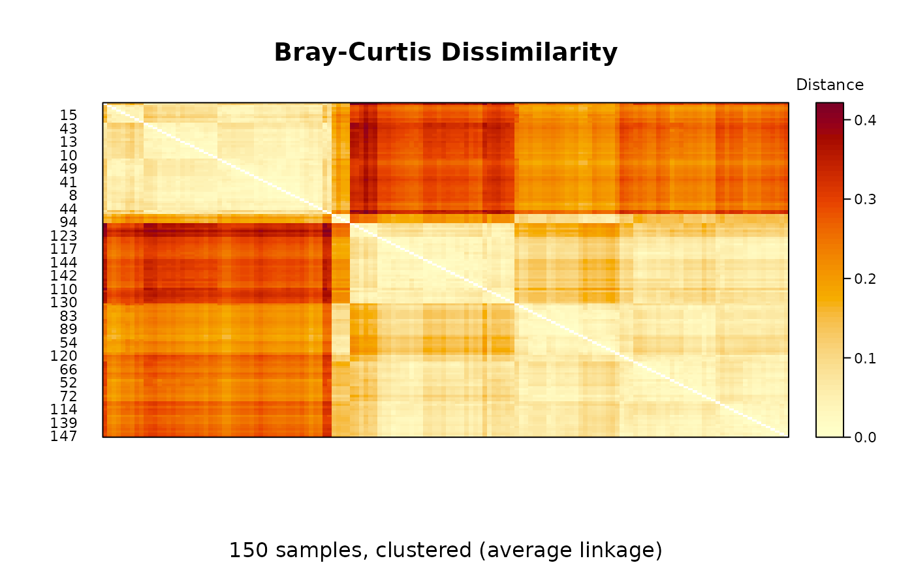
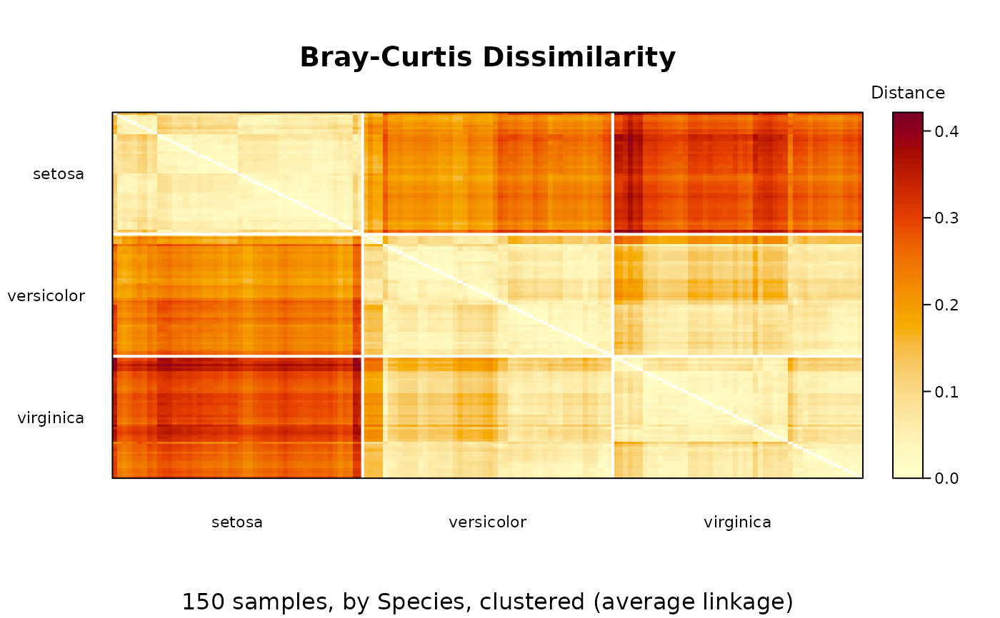
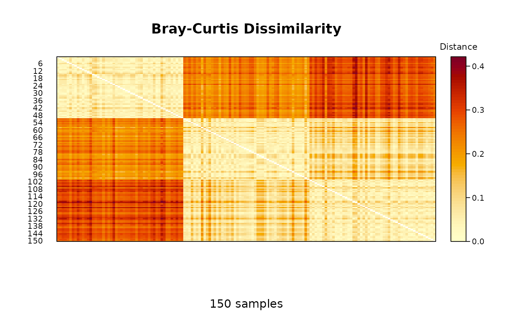
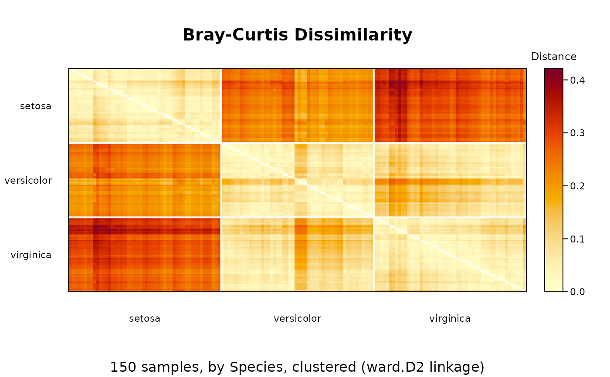
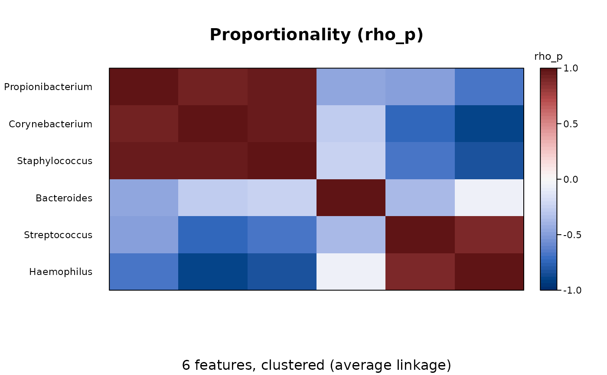

A heatmap of a distance matrix from beta_div() or any of its metric
functions (such as bray() or unweighted_unifrac()), or of the
associations of features from vlr(), rho_p(), phi_s() or
sparcc(): one row and one column per sample (or feature), each cell
coloured by the distance between its row's and its column's, with the
samples ordered as the clust it was made with says.
Usage
# S3 method for class 'ecodive_dist'
plot(x, groups = NULL, data = NULL, col = NULL, key = TRUE, ...)Arguments
- x
A distance matrix of class
ecodive_dist, as ecodive's distance functions return. (plot(as.dist(m))of another matrix would draw base R's plot of the distances as numbers; give it the class withclass(d) <- c("ecodive_dist", "dist").)- groups
Sorts the samples by group: the name of a column of
data, or a vector with one value per sample (matched by name when both are named, as forpermanova()). Factor, character or logical groups are drawn as blocks, in the order of a factor's levels, separated by white lines and labelled with the group; numeric ones sort the samples from smallest to largest.- data
A data frame of sample metadata, with one row per sample, when
groupsnames one of its columns.- col
The colour scale, from the smallest value to the largest. Defaults to
grDevices::hcl.colors()'s"YlOrRd"palette, light for near and dark for far; or, for correlations such asrho_p()andsparcc()(at least from -1 to 1, with the diagonal at 1), and when some values are negative, its"Blue-Red 3"palette, symmetric about 0.- key
Whether to draw the colour key on the right. Default
TRUE.- ...
Passed on to
graphics::image(), such asmain,sub, oruseRaster.
Details
Order. The samples are ordered by the clust argument of the
function that made x, kept in its display list
(attr(x, "display")$clust; see ecodive_display):
Not set (
clust = NULL, the default): the plot clusters them itself, by average linkage (UPGMA,stats::hclust()), so that similar samples sit together.xis not changed."none"(clust = FALSE): their order inx, which is the input's.A clustering method:
xis already in that order, which is kept.
To plot a matrix in its own order, make it with clust = FALSE.
Title. The matrix's title (see ecodive_display), the metric's
display name, such as "Bray-Curtis Dissimilarity"; or else the
method attribute that stats::dist() sets; "Distances" without
either, as after arithmetic on x.
With groups, the samples are sorted by group, keeping that order within
each group.
The rows run from the first sample at the top to the last at the bottom,
and the columns from left to right in the same order, so the matrix is
symmetric about the diagonal from the top left; only the rows are
labelled. The diagonal, which a dist object doesn't store, is left
blank.
The heatmap has one cell per pair of samples, so it needs memory for an \(n \times n\) matrix: subset or summarize thousands of samples first. Large heatmaps are drawn as raster images, where the device can.
The class ecodive_dist marks distances that ecodive computed. It comes
before "dist", so every function for dist objects works on them
as before.
Examples
dm <- bray(iris[, 1:4])
plot(dm)

# Sorted by species: three blocks along the diagonal.
plot(dm, 'Species', iris)

# In the input's order, not clustered.
plot(bray(iris[, 1:4], clust = FALSE))

# Clustered by Ward's method when computed: the result is reordered.
dm <- bray(iris[, 1:4], clust = 'ward.D2')
head(attr(dm, 'order'))
#> [1] 13 2 46 30 31 26
plot(dm, 'Species', iris)

# Proportionality, with negative values.
plot(rho_p(ex_counts + 1))
